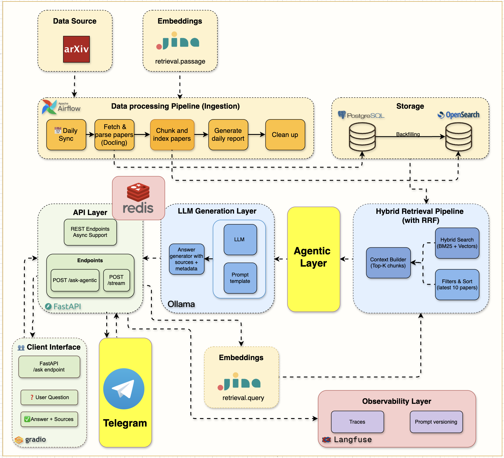
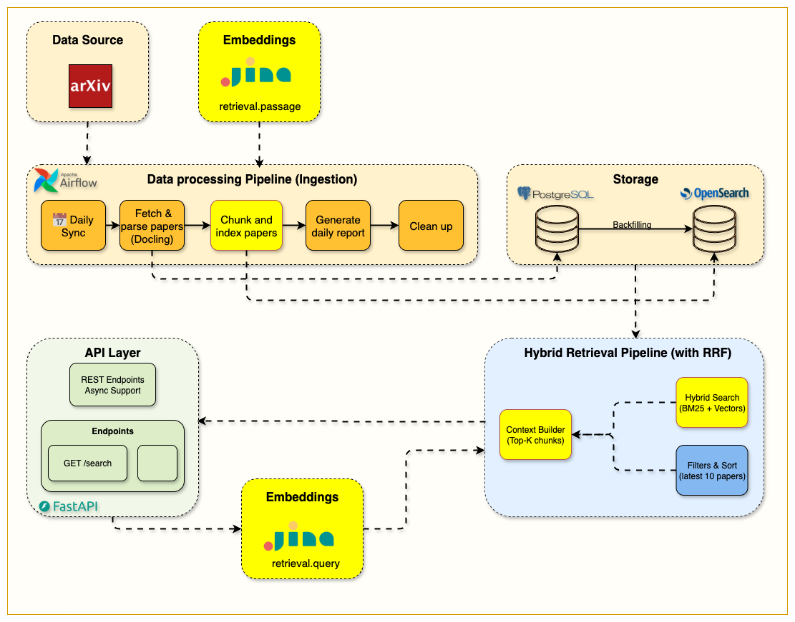
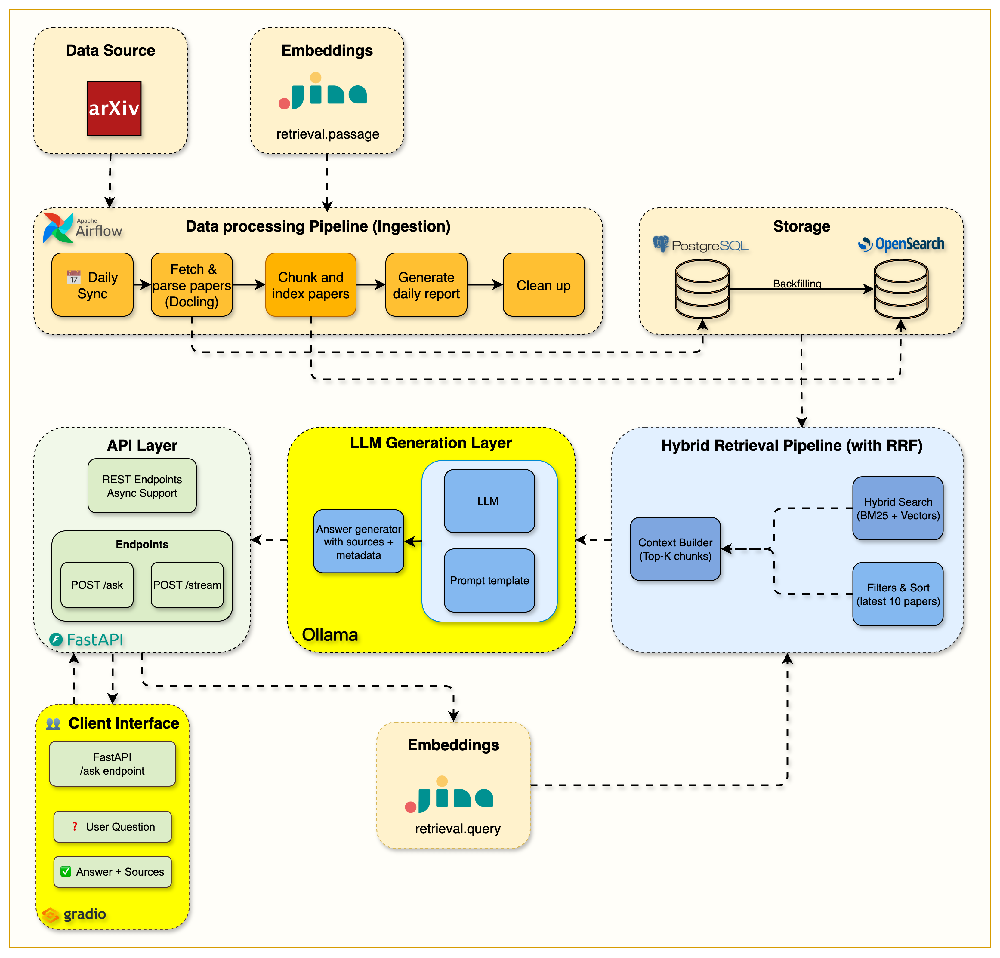
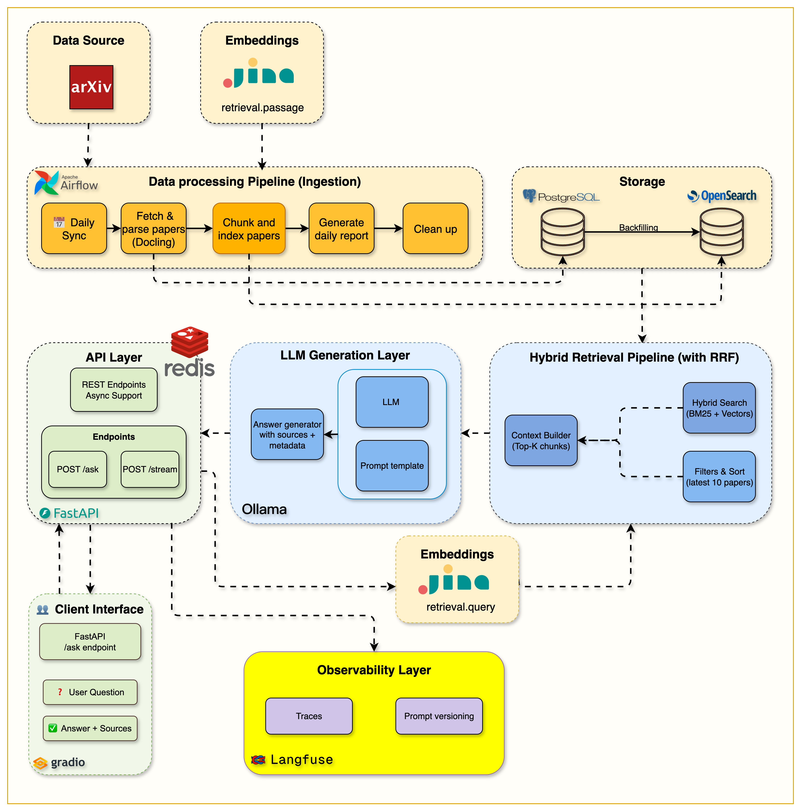

A production-ready AI research assistant with self-correcting LangGraph agents,
hybrid BM25 + vector search over ArXiv papers, full observability,
and a modern chat UI — all in a single docker compose up.
Every component is designed for reliability, observability, and extensibility — not just a proof-of-concept.
LangGraph agent with 7 nodes: guardrail → retrieve → grade → rewrite → generate. Automatically rewrites weak queries with up to 2 retries.
Reciprocal Rank Fusion pipeline over a unified OpenSearch index with both BM25 text and 1024-dim Jina v3 dense vectors.
Flip between local Ollama and any OpenAI-compatible API (OpenAI, Groq, Together, OpenRouter, vLLM) with zero code changes.
Every span, prompt, token count, and latency is exported to Langfuse v3. In-app thumbs up/down writes feedback to the same trace.
Exact-match Redis cache returns repeated queries in under 1ms, keyed by query + model + top_k + search mode + categories.
Airflow DAG fetches new cs.AI papers daily, parses PDFs with Docling, chunks by section, embeds with Jina, and indexes into OpenSearch.
12+ services orchestrated via Docker Compose, from ingestion to serving.




A carefully chosen production stack spanning frontend, backend, ML, and infrastructure.
A 7-node LangGraph state machine with built-in guardrails and self-correction.
LLM scores the query 0–100 for relevance to AI/ML research. Off-topic questions are rejected early, saving retrieval cost.
BM25 keyword search and dense-vector kNN run in parallel over OpenSearch. Results are merged via Reciprocal Rank Fusion.
Each retrieved chunk is graded for binary relevance. Irrelevant chunks are discarded before generation.
If too many chunks are irrelevant, the agent rewrites the query and retries retrieval (up to 2 attempts).
The LLM generates a grounded answer with inline citations back to the source ArXiv papers.
Every step is traced to Langfuse, the answer is cached in Redis, and the frontend renders reasoning steps.
Clone the repo, run docker compose up, and have the entire platform running in minutes.